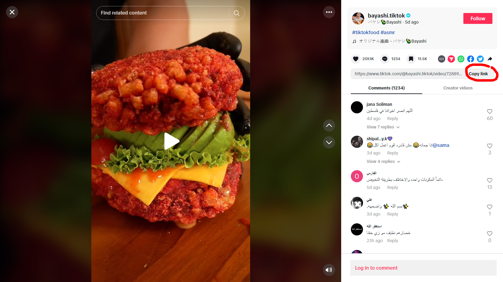
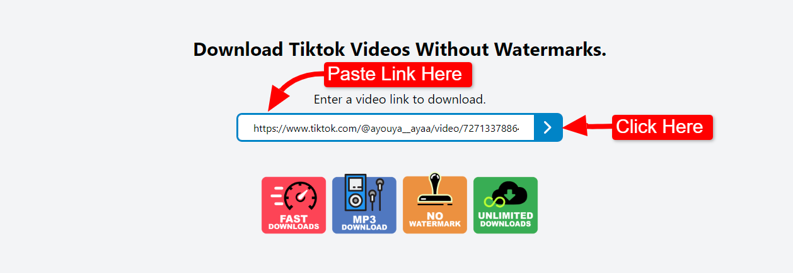

With TikTok's global popularity, the demand for downloading videos from this platform has been growing significantly. However, many users are not entirely satisfied with the built-in download feature on TikTok due to various reasons.
Some may not want the TikTok logo and uploader's ID to be included in the downloaded video. Additionally, there are cases where certain videos cannot be downloaded directly through the app.
Currently, there are several free TikTok video download tools available for both iOS and Android devices, as well as computers. These tools allow you to download high-quality TikTok videos without any logos and share them on various platforms. Below, we will introduce a popular tiktoksdownloader - TikTok video downloader that has been widely used and trusted by millions of users worldwide.
tiktoksdownloader is a popular online TikTok video downloader that allows you to download videos from TikTok without any logos or
watermarks.
You don't need to download any software on your computer or phone. Simply by using the link of the TikTok video you want
to download, you can save the video with just one click. With a user-friendly interface and diverse features, tiktoksdownloader
has become the top choice for many TikTok enthusiasts.
Here are the reasons why you should experience tiktoksdownloader to download Tiktok videos:
Step 1: Select the TikTok video you want to download.
You can open the TikTok app on your phone or access TikTok via a web browser (Google, Safari).
Step 2: Tap on the "Copy link"
Step 3: Access tiktoksdownloader on your web browser.
For the fastest access, you can save the tiktoksdownloader link in your browser
Step 4: Paste the link into tiktoksdownloader's toolbar and click『Download Arrow
Step 5: Choose Your Best Download Way Or Other Choices.
In conclusion: The above instructions explain how to download TikTok videos on all three popular platforms: Android (Samsung, Oppo, etc.), iOS (iPhone, iPad, etc.), and computers (PC, Mac OS, Windows). We hope you will support and share tiktoksdownloader with your friends. Thank you!